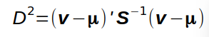

Mahalanobis distances, D2, measure the distance of multivariate data points from where they would be expected to fall given the correlations between variables. Below you can set the value of the data point on two variables, set the correlation coefficient between the variables, and then see how D2 changes in response.
Slide to set r:
The Mahalanobis distance formula is:

D2 is calculated using a vector of differences between the data values and the means of the variables, which for this example are:
The covariance matrix for the variables is S, which is:
Inverting S gives us S-1, which is:
D2 is then:
In this example the means of the variables and their variances are always the same, and only the data point and correlation between the variables can change the Mahalanobis distance.